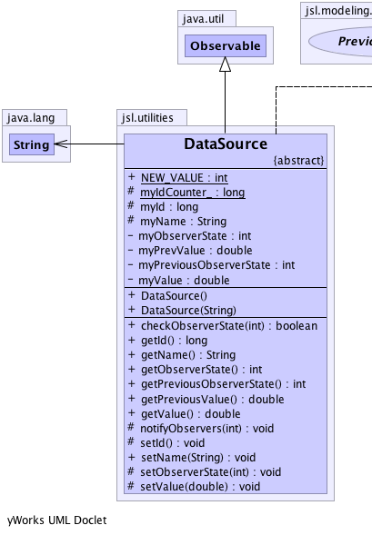
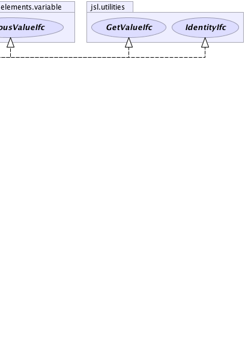

java.util.Observable
jsl.utilities.DataSource
java.util.Observable
jsl.utilities.DataSource
|
||||||||||
| PREV CLASS NEXT CLASS | FRAMES NO FRAMES | |||||||||
| SUMMARY: NESTED | FIELD | CONSTR | METHOD | DETAIL: FIELD | CONSTR | METHOD | |||||||||
java.lang.Object
public abstract class DataSource
|  |  |
| Field Summary | |
|---|---|
protected long |
myId
The id of this object |
protected static long |
myIdCounter_
A counter to count the number of created to assign "unique" ids |
protected java.lang.String |
myName
Holds the name of the statistic for reporting purposes. |
private int |
myObserverState
Keeps track of the current state for observers |
private int |
myPreviousObserverState
Keeps track of the previous type of state change for observers |
private double |
myPrevValue
The previous value of the variable. |
private double |
myValue
The current value |
static int |
NEW_VALUE
An "enum" to indicate that a new value has just been made available to observers |
| Constructor Summary | |
|---|---|
DataSource()
|
|
DataSource(java.lang.String name)
|
|
| Method Summary | |
|---|---|
boolean |
checkObserverState(int observerState)
Checks to see if the technique is in the given observer state. |
long |
getId()
Returns the id for this data source |
java.lang.String |
getName()
Gets the name. |
int |
getObserverState()
Returns an integer representing the state of the technique This can be used by Observers to find out what occurred for the technique |
int |
getPreviousObserverState()
Returns an integer representing the previous state of the DataSource This can be used by Observers to find out which action occurred prior to the current state change |
double |
getPreviousValue()
Returns the previous value for this data source if there was one returns Double.NaN if no previous value is available. |
double |
getValue()
Every data source must implement the getValue method. |
protected void |
notifyObservers(int observerState)
Used to notify observers that this data source has entered the given state. |
protected void |
setId()
|
void |
setName(java.lang.String str)
Sets the name |
protected void |
setObserverState(int observerState)
|
protected void |
setValue(double value)
Properly assigns the value and remembers previous value notifies any observers of the change |
| Methods inherited from class java.util.Observable |
|---|
addObserver, clearChanged, countObservers, deleteObserver, deleteObservers, hasChanged, notifyObservers, notifyObservers, setChanged |
| Methods inherited from class java.lang.Object |
|---|
clone, equals, finalize, getClass, hashCode, notify, notifyAll, toString, wait, wait, wait |
| Field Detail |
|---|
protected static long myIdCounter_
public static final int NEW_VALUE
private int myObserverState
private int myPreviousObserverState
protected long myId
protected java.lang.String myName
private double myValue
private double myPrevValue
| Constructor Detail |
|---|
public DataSource()
public DataSource(java.lang.String name)
| Method Detail |
|---|
public final java.lang.String getName()
getName in interface IdentityIfcpublic final void setName(java.lang.String str)
str - The name as a string.public final long getId()
getId in interface IdentityIfcpublic double getValue()
getValue in interface GetValueIfcpublic double getPreviousValue()
getPreviousValue in interface PreviousValueIfcpublic final boolean checkObserverState(int observerState)
public final int getObserverState()
public final int getPreviousObserverState()
protected void setId()
protected void setValue(double value)
value - protected final void notifyObservers(int observerState)
observerState - protected final void setObserverState(int observerState)
myObserverState - The myObserverState to set.
|
||||||||||
| PREV CLASS NEXT CLASS | FRAMES NO FRAMES | |||||||||
| SUMMARY: NESTED | FIELD | CONSTR | METHOD | DETAIL: FIELD | CONSTR | METHOD | |||||||||